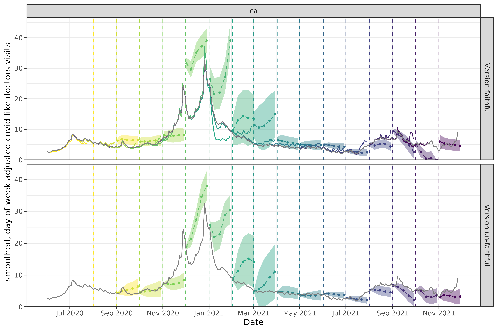
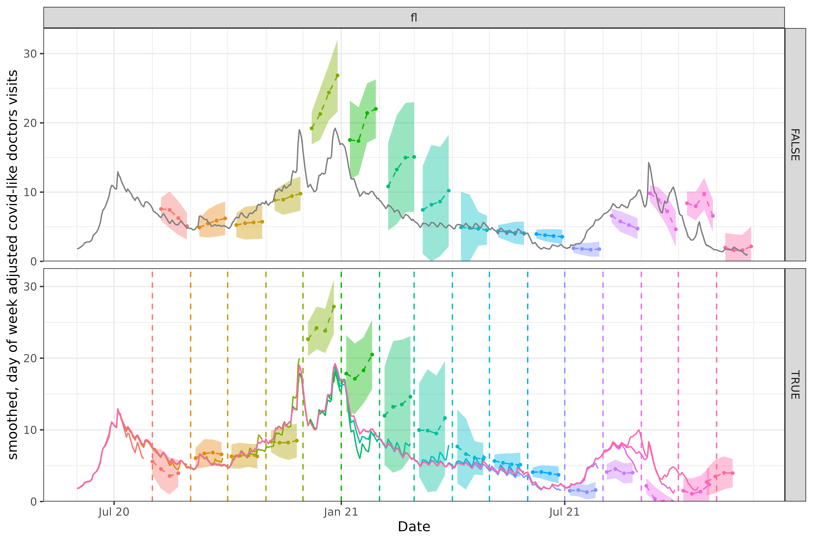
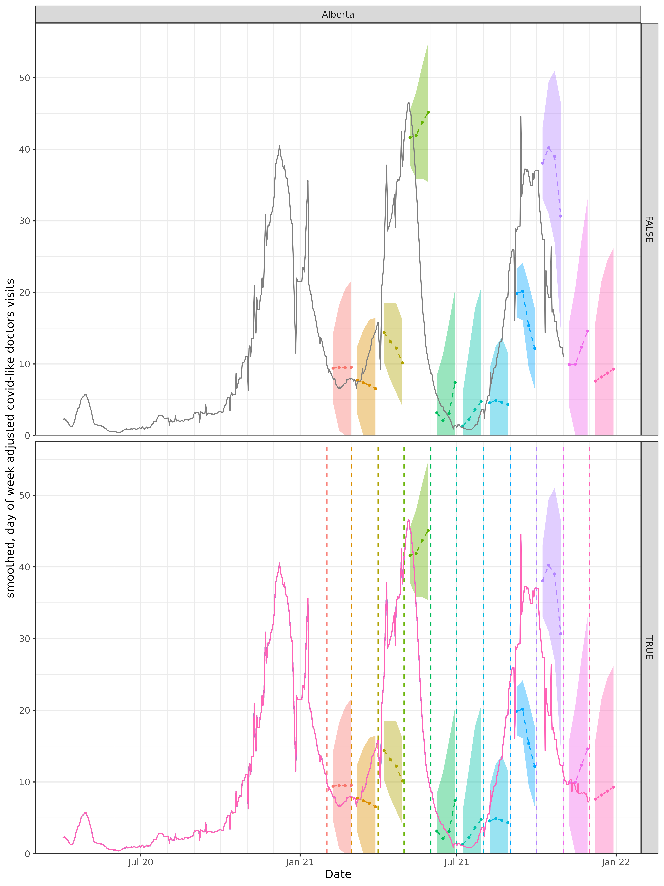

library(epipredict)
library(epiprocess)
library(epidatr)
library(data.table)
library(dplyr)
library(tidyr)
library(ggplot2)
library(magrittr)
library(purrr)Accurately backtesting forecasters
Backtesting is a crucial step in the development of forecasting models. It involves testing the model on historical data to see how well it performs. This is important because it allows us to see how well the model generalizes to new data and to identify any potential issues with the model. In the context of epidemiological forecasting, to do backtesting accurately, we need to account for the fact that the data available at the time of the forecast would have been different from the data available at the time of the backtest. This is because new data is constantly being collected and added to the dataset, which can affect the accuracy of the forecast.
For this reason, it is important to use version-aware forecasting, where the model is trained on data that would have been available at the time of the forecast. This ensures that the model is tested on data that is as close as possible to what would have been available in real-time; training and making predictions on finalized data can lead to an overly optimistic sense of accuracy (see, for example, McDonald et al. (2021) and the references therein).
In the epiprocess package, we provide
epix_slide(), a function that allows a convenient way to
perform version-aware forecasting by only using the data as it would
have been available at forecast reference time. In
vignette("epi_archive", package = "epiprocess"), we
introduced the concept of an epi_archive and we
demonstrated how to use epix_slide() to forecast the future
using a simple quantile regression model. In this vignette, we will
demonstrate how to use epix_slide() to backtest an
auto-regressive forecaster on historical COVID-19 case data from the US
and Canada. Instead of building a forecaster from scratch as we did in
the previous vignette, we will use the arx_forecaster()
function from the epipredict package.
Getting case data from US states into an
epi_archive
First, we download the version history (ie. archive) of the
percentage of doctor’s visits with CLI (COVID-like illness) computed
from medical insurance claims and the number of new confirmed COVID-19
cases per 100,000 population (daily) for 6 states from the COVIDcast API
(as used in the epiprocess vignette mentioned above).
# Select the `percent_cli` column from the data archive
doctor_visits <- archive_cases_dv_subset$DT %>%
select(geo_value, time_value, version, percent_cli) %>%
drop_na(percent_cli) %>%
as_epi_archive(compactify = TRUE)The data can also be fetched from the Delphi Epidata API with the following query:
library(epidatr)
doctor_visits <- pub_covidcast(
source = "doctor-visits",
signals = "smoothed_adj_cli",
geo_type = "state",
time_type = "day",
geo_values = "ca,fl,ny,tx",
time_values = epirange(20200601, 20211201),
issues = epirange(20200601, 20211201)
) %>%
rename(version = issue, percent_cli = value) %>%
as_epi_archive(compactify = TRUE)Backtesting a simple autoregressive forecaster
One of the most common use cases of
epiprocess::epi_archive() object is for accurate model
backtesting.
In this section we will:
- develop a simple autoregressive forecaster that predicts the next value of the signal based on the current and past values of the signal itself, and
- demonstrate how to slide this forecaster over the
epi_archiveobject to produce forecasts at a few dates date, using version-unaware and -aware computations, - compare the two approaches.
To start, let’s use a simple autoregressive forecaster to predict the
percentage of doctor’s hospital visits with CLI (COVID-like illness)
(percent_cli) in the future (we choose this target because
of the dataset’s pattern of substantial revisions; forecasting doctor’s
visits is an unusual forecasting target otherwise). While some AR models
output single point forecasts, we will use quantile regression to
produce a point prediction along with an 90% uncertainty band,
represented by a predictive quantiles at the 5% and 95% levels (lower
and upper endpoints of the uncertainty band).
The arx_forecaster() function wraps the autoregressive
forecaster we need and comes with sensible defaults:
- we specify the predicted outcome to be the percentage of doctor’s
visits with CLI (
percent_cli), - we use a linear regression model as the engine,
- the autoregressive features assume lags of 0, 7, and 14 days,
- we forecast 7 days ahead.
All these default settings and more can be seen by calling
arx_args_list():
arx_args_list()
#> • lags : 0, 7, and 14
#> • ahead : 7
#> • n_training : Inf
#> • quantile_levels : 0.05, 0.1, 0.25, 0.5, 0.75, 0.9, and 0.95
#> • forecast_date : "NULL"
#> • target_date : "NULL"
#> • adjust_latency : "none"
#> • warn_latency : TRUE
#> • symmetrize : TRUE
#> • nonneg : TRUE
#> • max_lags : 14
#> • quantile_by_key : "_empty_"
#> • check_enough_data_n : "NULL"
#> • check_enough_data_epi_keys : "NULL"These can be modified as needed, by sending your desired arguments
into arx_forecaster(args_list = arx_args_list()). For now
we will use the defaults.
Note: We will use a geo-pooled
approach, where we train the model on data from all states and
territories combined. This is because the data is quite similar across
states, and pooling the data can help improve the accuracy of the
forecasts, while also reducing the susceptibility of the model to noise.
In the interest of computational speed, we only use the 6 state dataset
here, but the full archive can be used in the same way and has performed
well in the past. Implementation-wise, geo-pooling is achieved by not
using group_by(geo_value) prior to
epix_slide(). In other cases, grouping may be preferrable,
so we leave it to the user to decide, but flag this modeling decision
here.
Let’s use the epix_as_of() method to generate a snapshot
of the archive at the last date, and then run the forecaster.
# Let's forecast 14 days prior to the last date in the archive, to compare.
forecast_date <- doctor_visits$versions_end - 14
# The .versions argument selects only the last version in the archive and
# produces a forecast only on that date.
forecasts <- doctor_visits %>%
epix_slide(
~ arx_forecaster(
.x,
outcome = "percent_cli",
predictors = "percent_cli",
args_list = arx_args_list()
)$predictions %>%
pivot_quantiles_wider(.pred_distn),
.versions = forecast_date
)
# Join the forecasts with with the latest data at the time of the forecast to
# compare. Since `percent_cli` data has a few days of lag, we use `tidyr::fill` to
# fill the missing values with the last observed value.
forecasts %>%
inner_join(
doctor_visits %>%
epix_as_of(doctor_visits$versions_end) %>%
group_by(geo_value) %>%
fill(percent_cli),
by = c("geo_value", "target_date" = "time_value")
) %>%
select(geo_value, forecast_date, .pred, `0.05`, `0.95`, percent_cli)
#> # A tibble: 4 × 6
#> geo_value forecast_date .pred `0.05` `0.95` percent_cli
#> <chr> <date> <dbl> <dbl> <dbl> <dbl>
#> 1 ca 2021-11-12 7.23 4.22 10.2 4.75
#> 2 fl 2021-11-12 1.40 0 4.41 1.57
#> 3 ny 2021-11-12 3.98 0.968 6.99 3.52
#> 4 tx 2021-11-12 2.23 0 5.24 2.01The resulting epi_df now contains two new columns: .pred
and .pred_distn, corresponding to the point forecast
(median) and the quantile distribution containing our requested quantile
forecasts (in this case, 0.05 and 0.95) respectively. The forecasts fall
within the prediction interval, so our implementation passes a simple
validation.
Now let’s go ahead and slide this forecaster in a version unaware way
and a version aware way. For the version unaware way, we need to
snapshot the latest version of the data, and then make a faux archive by
setting version = time_value. This has the effect of
simulating a data set that receives the final version updates every day.
For the version aware way, we will simply use the true
epi_archive object.
archive_cases_dv_subset_faux <- doctor_visits %>%
epix_as_of(doctor_visits$versions_end) %>%
mutate(version = time_value) %>%
as_epi_archive()To reduce typing, we create the wrapper function
forecast_k_week_ahead().
# Latest snapshot of data, and forecast dates
forecast_dates <- seq(from = as.Date("2020-08-01"), to = as.Date("2021-11-01"), by = "1 month")
aheads <- c(7, 14, 21, 28)
# @param epi_archive The epi_archive object to forecast from
# @param ahead The number of days ahead to forecast
# @param outcome The outcome variable to forecast
# @param predictors The predictors to use in the model
# @param forecast_dates The dates to forecast on
# @param process_data A function to process the data before forecasting
forecast_k_week_ahead <- function(
epi_archive,
ahead = 7,
outcome = NULL, predictors = NULL, forecast_dates = NULL, process_data = identity) {
if (is.null(forecast_dates)) {
forecast_dates <- epi_archive$versions_end
}
if (is.null(outcome) || is.null(predictors)) {
stop("Please specify the outcome and predictors.")
}
epi_archive %>%
epix_slide(
~ arx_forecaster(
process_data(.x), outcome, predictors,
args_list = arx_args_list(ahead = ahead)
)$predictions %>%
pivot_quantiles_wider(.pred_distn),
.before = 120,
.versions = forecast_dates
)
}
# Generate the forecasts and bind them together
forecasts <- bind_rows(
map(aheads, ~ forecast_k_week_ahead(
archive_cases_dv_subset_faux,
ahead = .x,
outcome = "percent_cli",
predictors = "percent_cli",
forecast_dates = forecast_dates
) %>% mutate(version_aware = FALSE)),
map(aheads, ~ forecast_k_week_ahead(
doctor_visits,
ahead = .x,
outcome = "percent_cli",
predictors = "percent_cli",
forecast_dates = forecast_dates
) %>% mutate(version_aware = TRUE))
)Here, arx_forecaster() does all the heavy lifting. It
creates leads of the target (respecting time stamps and locations) along
with lags of the features (here, the response and doctors visits),
estimates a forecasting model using the specified engine, creates
predictions, and non-parametric confidence bands.
To see how the predictions compare, we plot them on top of the latest case rates. Note that even though we’ve fitted the model on all states, we’ll just display the results for two states, California (CA) and Florida (FL), to get a sense of the model performance while keeping the graphic simple.
Code for plotting
geo_choose <- "ca"
forecasts_filtered <- forecasts %>%
filter(geo_value == geo_choose) %>%
mutate(time_value = version)
percent_cli_data <- bind_rows(
# Snapshotted data for the version-aware forecasts
map(
forecast_dates,
~ doctor_visits %>%
epix_as_of(.x) %>%
mutate(version = .x)
) %>%
bind_rows() %>%
mutate(version_aware = TRUE),
# Latest data for the version-unaware forecasts
doctor_visits %>%
epix_as_of(doctor_visits$versions_end) %>%
mutate(version_aware = FALSE)
) %>%
filter(geo_value == geo_choose)
p1 <- ggplot(data = forecasts_filtered, aes(x = target_date, group = time_value)) +
geom_ribbon(aes(ymin = `0.05`, ymax = `0.95`, fill = factor(time_value)), alpha = 0.4) +
geom_line(aes(y = .pred, color = factor(time_value)), linetype = 2L) +
geom_point(aes(y = .pred, color = factor(time_value)), size = 0.75) +
geom_vline(data = percent_cli_data, aes(color = factor(version), xintercept = version), lty = 2) +
geom_line(
data = percent_cli_data,
aes(x = time_value, y = percent_cli, color = factor(version)),
inherit.aes = FALSE, na.rm = TRUE
) +
facet_grid(version_aware ~ geo_value, scales = "free") +
scale_x_date(minor_breaks = "month", date_labels = "%b %y") +
scale_y_continuous(expand = expansion(c(0, 0.05))) +
labs(x = "Date", y = "smoothed, day of week adjusted covid-like doctors visits") +
theme(legend.position = "none")
geo_choose <- "fl"
forecasts_filtered <- forecasts %>%
filter(geo_value == geo_choose) %>%
mutate(time_value = version)
percent_cli_data <- bind_rows(
# Snapshotted data for the version-aware forecasts
map(
forecast_dates,
~ doctor_visits %>%
epix_as_of(.x) %>%
mutate(version = .x)
) %>%
bind_rows() %>%
mutate(version_aware = TRUE),
# Latest data for the version-unaware forecasts
doctor_visits %>%
epix_as_of(doctor_visits$versions_end) %>%
mutate(version_aware = FALSE)
) %>%
filter(geo_value == geo_choose)
p2 <- ggplot(data = forecasts_filtered, aes(x = target_date, group = time_value)) +
geom_ribbon(aes(ymin = `0.05`, ymax = `0.95`, fill = factor(time_value)), alpha = 0.4) +
geom_line(aes(y = .pred, color = factor(time_value)), linetype = 2L) +
geom_point(aes(y = .pred, color = factor(time_value)), size = 0.75) +
geom_vline(data = percent_cli_data, aes(color = factor(version), xintercept = version), lty = 2) +
geom_line(
data = percent_cli_data,
aes(x = time_value, y = percent_cli, color = factor(version)),
inherit.aes = FALSE, na.rm = TRUE
) +
facet_grid(version_aware ~ geo_value, scales = "free") +
scale_x_date(minor_breaks = "month", date_labels = "%b %y") +
scale_y_continuous(expand = expansion(c(0, 0.05))) +
labs(x = "Date", y = "smoothed, day of week adjusted covid-like doctors visits") +
theme(legend.position = "none")#> Warning: Removed 544 rows containing missing values or values outside the scale range
#> (`geom_vline()`).
#> Warning: Removed 544 rows containing missing values or values outside the scale range
#> (`geom_vline()`).
For the two states of interest, neither approach produces amazingly accurate forecasts. However, the extent to which using versioned data can affect backtesting, scoring, and therefore model choice for production can be inferred from these plots.
Example using case data from Canada
Data and forecasts. Similar to the above.
By leveraging the flexibility of epiprocess, we can
apply the same techniques to data from other sources. Since some
collaborators are in British Columbia, Canada, we’ll do essentially the
same thing for Canada as we did above.
The COVID-19 Canada Open Data Working Group collects daily time series data on COVID-19 cases, deaths, recoveries, testing and vaccinations at the health region and province levels. Data are collected from publicly available sources such as government datasets and news releases. Unfortunately, there is no simple versioned source, so we have created our own from the Github commit history.
First, we load versioned case rates at the provincial level. After
converting these to 7-day averages (due to highly variable provincial
reporting mismatches), we then convert the data to an
epi_archive object, and extract the latest version from it.
Finally, we run the same forcasting exercise as for the American data,
but here we compare the forecasts produced from using simple linear
regression with those from using boosted regression trees.
aheads <- c(7, 14, 21, 28)
canada_archive <- can_prov_cases
canada_archive_faux <- epix_as_of(canada_archive, canada_archive$versions_end) %>%
mutate(version = time_value) %>%
as_epi_archive()
# This function will add the 7-day average of the case rate to the data
# before forecasting.
smooth_cases <- function(epi_df) {
epi_df %>%
group_by(geo_value) %>%
epi_slide_mean("case_rate", .window_size = 7, na.rm = TRUE, .suffix = "_{.n}dav")
}
forecast_dates <- seq.Date(
from = min(canada_archive$DT$version),
to = max(canada_archive$DT$version),
by = "1 month"
)
# Generate the forecasts, and bind them together
canada_forecasts <- bind_rows(
map(
aheads,
~ forecast_k_week_ahead(
canada_archive_faux,
ahead = .x,
outcome = "case_rate_7dav",
predictors = "case_rate_7dav",
forecast_dates = forecast_dates,
process_data = smooth_cases
) %>% mutate(version_aware = FALSE)
),
map(
aheads,
~ forecast_k_week_ahead(
canada_archive,
ahead = .x,
outcome = "case_rate_7dav",
predictors = "case_rate_7dav",
forecast_dates = forecast_dates,
process_data = smooth_cases
) %>% mutate(version_aware = TRUE)
)
)The figures below shows the results for a single province.
geo_choose <- "Alberta"
forecasts_filtered <- canada_forecasts %>%
filter(geo_value == geo_choose) %>%
mutate(time_value = version)
case_rate_data <- bind_rows(
# Snapshotted data for the version-aware forecasts
map(
forecast_dates,
~ canada_archive %>%
epix_as_of(.x) %>%
smooth_cases() %>%
mutate(case_rate = case_rate_7dav, version = .x)
) %>%
bind_rows() %>%
mutate(version_aware = TRUE),
# Latest data for the version-unaware forecasts
canada_archive %>%
epix_as_of(doctor_visits$versions_end) %>%
smooth_cases() %>%
mutate(case_rate = case_rate_7dav, version_aware = FALSE)
) %>%
filter(geo_value == geo_choose)
ggplot(data = forecasts_filtered, aes(x = target_date, group = time_value)) +
geom_ribbon(aes(ymin = `0.05`, ymax = `0.95`, fill = factor(time_value)), alpha = 0.4) +
geom_line(aes(y = .pred, color = factor(time_value)), linetype = 2L) +
geom_point(aes(y = .pred, color = factor(time_value)), size = 0.75) +
geom_vline(data = case_rate_data, aes(color = factor(version), xintercept = version), lty = 2) +
geom_line(
data = case_rate_data,
aes(x = time_value, y = case_rate, color = factor(version)),
inherit.aes = FALSE, na.rm = TRUE
) +
facet_grid(version_aware ~ geo_value, scales = "free") +
scale_x_date(minor_breaks = "month", date_labels = "%b %y") +
scale_y_continuous(expand = expansion(c(0, 0.05))) +
labs(x = "Date", y = "smoothed, day of week adjusted covid-like doctors visits") +
theme(legend.position = "none")